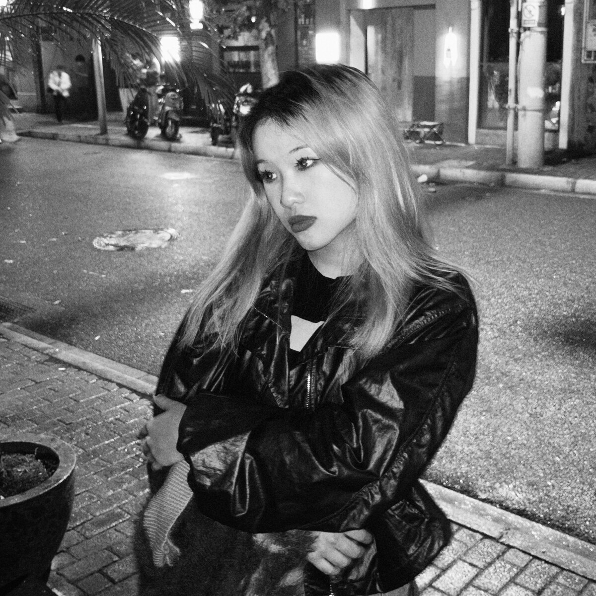
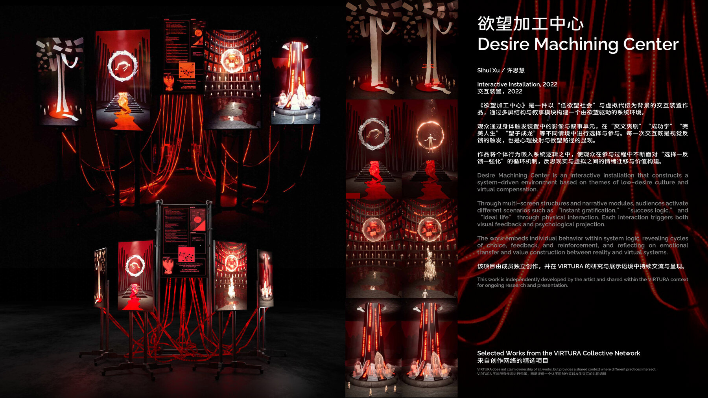

← 返回成员独立作品

成员独立作品
Desire Machining Center
欲望加工中心 / Interactive Installation / 2022
一件以“低欲望社会”与虚拟代偿为背景的交互装置作品，通过多屏结构与叙事模块构建一个由欲望驱动的系统环境。
Sihui Xu / 许思慧
Spatial Visuals / Interaction Design
Interactive Installation
多屏结构 / 身体触发 / 反馈机制
低欲望社会
虚拟代偿、选择、反馈、强化。
成员独立作品
VIRTURA 只提供公共语境与链接。
交互结构
观众进入“选择-反馈-强化”的循环。
观众通过身体触发装置中的影像与叙事单元，在“爽文爽剧”“成功学”“完美人生”“望子成龙”等情境中进行选择与参与。
每一次交互既是视觉反馈的触发，也是心理投射与欲望路径的显现。
Position
空间视觉与交互设计方向，关注沉浸式视听、空间叙事与具有反馈关系的感知体验。